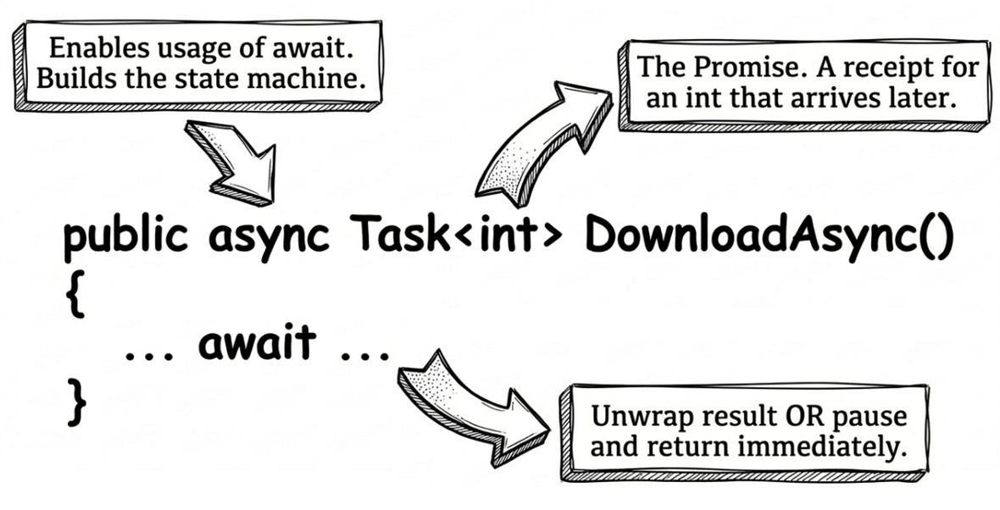
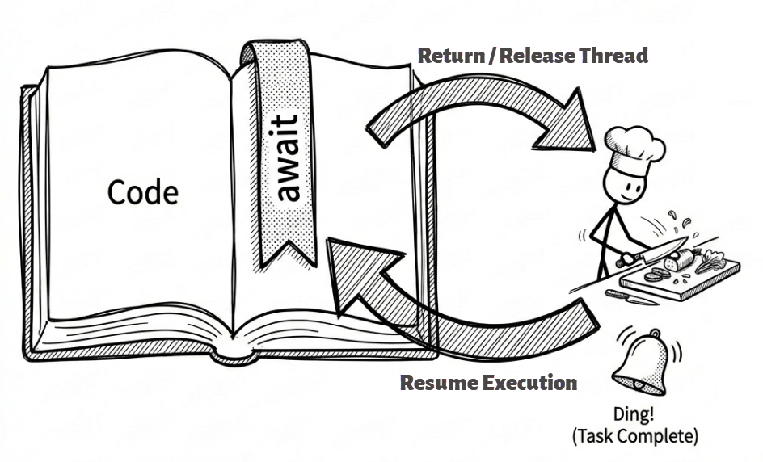
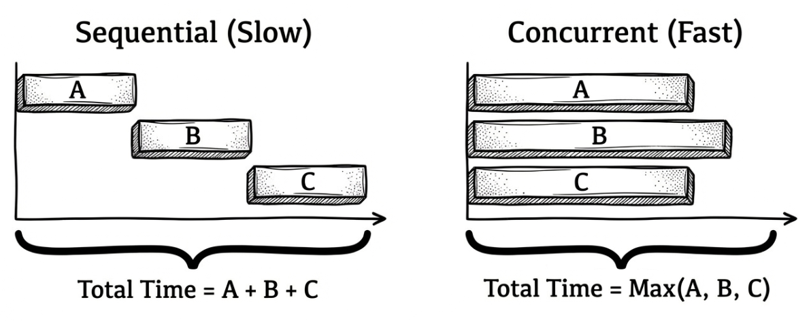
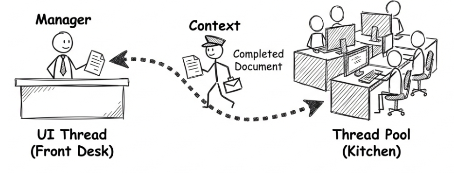
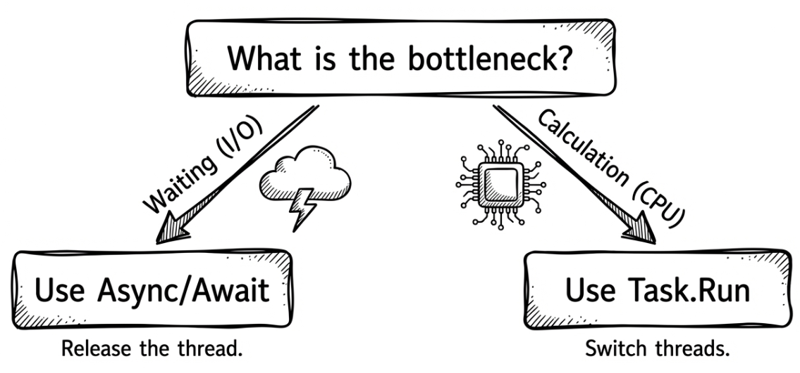
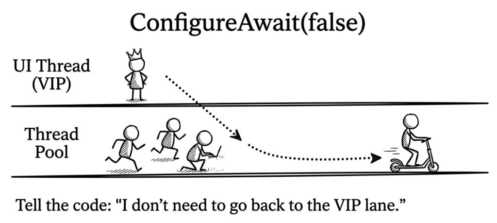

Chapter 3: async and await
In the previous chapter, we learned how to create background work with Task.Run and how to track that work through a Task object. However, we also discovered a significant issue: if we use .Wait() or .Result to retrieve the result, we block the current thread. This takes us right back to the original “freezing” problem we were trying to solve.
So, is there a way to wait for a Task to complete asynchronously?
This is exactly what C#’s async and await keywords are designed to solve. They are syntactic sugar provided by the C# compiler, allowing us to express complex asynchronous control flow in a style that looks almost like synchronous code. You could say that async/await is the foundation of modern asynchronous programming in .NET.
This chapter will help you understand async/await more deeply. By the end, you will be able to:
- Write concise and readable asynchronous code with
asyncandawait. - Understand how the control flow of an asynchronous method pauses and resumes at
await. - Use
Task.WhenAll,Task.WhenAny, andTask.WhenEachto run multiple asynchronous operations concurrently. - Understand how
SynchronizationContextaffects which thread your code runs on. - Know when and why
ConfigureAwait(false)matters. - Understand why
async voidshould almost always be avoided.
How async and await simplify asynchronous flow
To see what problem async and await solve, let’s first imagine a world without them. Suppose we want to write a method that downloads a web page asynchronously and returns its character count.
Before async/await existed, we primarily relied on the ContinueWith method on Task objects to chain asynchronous work together. It registers a callback that says, “When the previous task completes, do this next…” Although this approach avoided blocking, the resulting code was quite verbose:
static readonly HttpClient httpClient = new HttpClient();
// The traditional ContinueWith style (complex and harder to read)
static Task<int> DownloadPageAndCountCharsLegacy(string url)
{
// 1. Start the asynchronous download
return httpClient.GetStringAsync(url).ContinueWith(downloadTask =>
{
// 2. This block runs only after the download has completed
string content = downloadTask.Result;
return content.Length;
});
}This style relies heavily on lambda expressions. If the workflow becomes even slightly more complicated, for example by parsing the content after downloading it and then saving it to a database, it quickly turns into callback hell. The code becomes harder to read and maintain.
Note
The examples in this book use a reusable, longer-lived
HttpClientobject so that connections can be shared. This is because creating a newHttpClientfor every request can lead to socket exhaustion. That said, reusing one staticHttpClientis only a workable baseline, not the ideal solution. A better approach is to useIHttpClientFactory. For details, see Microsoft documentation: Use IHttpClientFactory to implement resilient HTTP requests.
Next, let’s see how the same thing looks with async and await:
// The modern async/await style (concise and intuitive)
static async Task<int> DownloadPageAndCountCharsAsync(string url)
{
// 1. Wait asynchronously for the download to complete,
// without blocking the thread.
string content = await httpClient.GetStringAsync(url);
// 2. Once the download is done, execution continues from here
return content.Length;
}Source code: DemoDownloadPage
The code looks almost identical to a synchronous version. That is the beauty of async/await. Below, we will break down what these two keywords are actually doing.
The async keyword
Let’s start with async. It is a method modifier. When you mark a method with async, you are essentially telling the compiler two things:
- This method will use the
awaitkeyword internally. - The compiler needs to transform this method into a state machine. We will see shortly how that state machine works.
Common return types for async methods include Task, Task<T>, ValueTask, and ValueTask<T>. This echoes what we learned in Chapter 2: the return value of an asynchronous operation is essentially a promise or a future.
Of course, there are a few exceptions, such as event handlers returning void and asynchronous iterators returning IAsyncEnumerable<T>.

The await keyword
Now let’s look at await. It is an operator used to wait for an awaitable object to complete. It usually appears inside an async method, but it can also be used in other contexts that support await, such as async lambdas, async anonymous methods, and async local functions. It can also be used in modern C# top-level statements.
When execution reaches an await expression for a Task, the following steps take place:
- Check the
Taskstate:awaitfirst checks whether theTaskit is waiting for has already completed. If it has, execution simply continues as if theawaitwere not there. - Pause and return: If the
Taskhas not completed yet,awaitsets up a continuation point and then immediately returns control to the code that called thisasyncmethod, or to the current execution environment. This step is important: it means the current thread is not blocked and can perform other work. - Resume execution: Once the awaited
Taskeventually completes, the .NET runtime returns to that continuation point and continues executing the rest of theasyncmethod. If the awaited operation produces a result, that is, if it is aTask<T>, then theawaitexpression itself yields a value of typeT.
This “pause and resume” process is managed behind the scenes by the compiler-generated state machine. You write code that looks sequential, but the compiler helps you split it apart into multiple blocks and resume them at the right time.
If that explanation still feels a little abstract, picture the chef analogy again. Imagine a chef (representing our thread) following a recipe (our code). When he reaches the step that says, “put the steak into the oven for 30 minutes” (similar to await on an I/O operation), he does not stand in front of the oven doing nothing.
Instead, he puts a bookmark in the recipe (the compiler-generated state record), notes where he left off, and then performs other tasks or hands control back to the current environment. When the oven finishes, meaning the Task completes, he flips back to that bookmark and resumes the next step, such as plating the steak. That is the resume part of await.

What happens underneath: the state machine
Next, let’s look at how await pauses and resumes execution from the compiler’s point of view.
Note
This section is supplementary. It explains what happens under the hood of an
asyncmethod. You can skip it if you want, but understanding a little more about how the compiler transforms yourasyncmethods will help later when you debug code or tune performance.
When the C# compiler encounters an async method, it does a fair amount of work behind the scenes. It generates a hidden type that implements IAsyncStateMachine. This hidden type is the state machine.
Inside that type, the compiler splits the whole method into different states based on each await in your code.
- The initial state is
-1. When execution reaches the firstawaitand sees that the awaited work has not finished yet, the state machine changes the current state to0, stores the current local variables, and registers itself as a continuation on thatTask. Then it returns immediately, giving the thread back to the caller. - When the background
Taskcompletes, it triggers a call to the state machine’sMoveNext()method. MoveNext()looks at the previously recorded state and usesgototo jump precisely to the place where execution had paused, restores the variable values, and continues running.
In other words, the reason you can write “synchronous-looking code” that behaves asynchronously is that all the complicated state tracking and callback registration, which used to be done by hand, has been taken over by the compiler-generated state machine.
If this still feels abstract, the following heavily simplified pseudocode simulates the state machine the compiler might generate for the earlier DownloadPageAndCountCharsAsync method. Read it together with the comments to follow the internal flow:
// Compiler-generated state machine
// (greatly simplified conceptual pseudocode)
class DownloadStateMachine : IAsyncStateMachine
{
int _state = -1; // Initial state is -1
string _url; // Original method parameter
string _content; // Original local variable lifted to a field
TaskAwaiter<string> _awaiter;
public void MoveNext()
{
// Jump to the correct block based on the current state
if (_state == 0) goto state_0;
// --- State -1 (before the first await) ---
_awaiter = httpClient.GetStringAsync(_url).GetAwaiter();
// If the work is not already complete, prepare to pause
if (!_awaiter.IsCompleted)
{
_state = 0; // Change state and record that we paused here
// Tell the awaiter:
// "When the download is done, call my MoveNext() again"
_awaiter.OnCompleted(this.MoveNext);
// Key point: return immediately
// and give the thread back to the caller.
return;
}
state_0:
// --- State 0 (resuming after await) ---
// Note: before jumping here,
// the compiler has already ensured that all
// field values, such as _content, have been restored correctly.
_state = -1; // Restore the default state
_content = _awaiter.GetResult(); // Get the download result
int result = _content.Length;
// Put the result into the Task and finish the state machine
SetResult(result);
}
}From this pseudocode, you can see more clearly how an await boundary takes what originally looked like a single sequential method and transforms it into a state machine controlled through _state and goto. This is one key reason async/await can avoid blocking the thread.
Compiler-generated async state machines may eventually become history
As of this writing, Microsoft released .NET 11 Preview 2 in March 2026. In the release notes for that preview, Microsoft introduced runtime async, which moves async machinery management away from compiler-generated state machines and into the .NET runtime itself. Asynchronous code written in C# may eventually benefit in several ways when targeting .NET 11: smaller IL output because the compiler no longer needs to generate huge async state machines, more efficient memory use at runtime, and potentially a more straightforward debugging experience. However, this feature is still in preview and may change.
For more information, see the official .NET 11 Preview 2 Release Notes.
Waiting for multiple tasks at the same time: Task.WhenAll and Task.WhenEach
So far, we have learned how to await a single asynchronous operation. But in real applications, waiting for just one thing at a time is often not enough. We frequently need to run multiple asynchronous operations at once, such as downloading multiple web pages, querying two different databases, or calling several web APIs simultaneously.
If we await them one after another, execution becomes sequential, and we lose the concurrency advantage that asynchrony offers. To make better use of system resources, we should let those operations run concurrently. This section introduces several .NET tools for that purpose.
Marching together: Task.WhenAll
Task.WhenAll is the most commonly used method here. It takes a group of Task objects and returns a new Task. That new Task completes only when all of the supplied tasks have completed. If the inputs are Task<TResult>, then await Task.WhenAll(...) returns a TResult[] array containing all results.
Note
When you use
Task.WhenAll, if one or more tasks throw exceptions,awaitwill rethrow only the first captured exception. If you need to process every exception that occurred, inspect theExceptionproperty of theTaskreturned byTask.WhenAllinstead. It is anAggregateException. We will cover that in Chapter 4.
Let’s first compare “waiting sequentially” with “waiting together.” Assume that downloading each page takes one second:
// ✘ Incorrect example:
// execute sequentially and retrieve results one by one.
// Inefficient.
async Task SequentialDownloadAsync()
{
// This takes 1 second + 1 second + 1 second = 3 seconds
string page1 = await httpClient.GetStringAsync("https://demo.com/1");
string page2 = await httpClient.GetStringAsync("https://demo.com/2");
string page3 = await httpClient.GetStringAsync("https://demo.com/3");
}
// ✔ Correct example:
// run concurrently, then retrieve all results at once
// after everything completes. Efficient.
async Task ConcurrentDownloadAsync()
{
// 1. Start all tasks
// Notice: there is no await here yet,
// so each operation can begin independently.
Task<string> task1 = httpClient.GetStringAsync("https://demo.com/1");
Task<string> task2 = httpClient.GetStringAsync("https://demo.com/2");
Task<string> task3 = httpClient.GetStringAsync("https://demo.com/3");
// 2. Wait for all of them to complete
// This takes only about 1 second, depending on the slowest request.
string[] results = await Task.WhenAll(task1, task2, task3);
}Source code: DemoTaskWhenAll

Taking whichever finishes first: Task.WhenAny
Sometimes, we do not need to wait for everything to finish; we only need the first one to complete. This is exactly what Task.WhenAny is for. It accepts a group of Task objects and returns as soon as any one of them completes, whether it completed successfully, failed, or was canceled.
Common use cases include:
- Redundancy: call three servers that provide the same service and use whichever one responds first.
- Timeout control: wait for both “the main operation” and “a timer task (
Task.Delay)” and see which finishes first. If the timer task wins, the operation has timed out.
The following example shows how to implement timeout control with Task.WhenAny and Task.Delay:
async Task<string> DownloadWithTimeoutAsync(string url)
{
using var cts = new CancellationTokenSource();
Task<string> downloadTask = httpClient.GetStringAsync(url, cts.Token);
Task timeoutTask = Task.Delay(3000, cts.Token); // 3-second timeout
// Wait until either one completes
Task completedTask = await Task.WhenAny(downloadTask, timeoutTask);
if (completedTask == timeoutTask)
{
// Timed out. Cancel the download and throw an exception.
cts.Cancel();
throw new TimeoutException("The download operation timed out.");
}
// The download finished first.
// Cancel timeoutTask so it does not keep running
// unnecessarily.
cts.Cancel();
// The download finished first, so return the result.
return await downloadTask;
}The key point is that Task.WhenAny returns the task that completed first, not the download result itself. After confirming that downloadTask completed first, we still need to await downloadTask to obtain the downloaded content or let any exception from the download surface normally.
Source code: DemoTaskWhenAny
Processing tasks as they complete: Task.WhenEach (.NET 9)
Besides “waiting for everything” and “taking the first one,” there is another common requirement: starting multiple asynchronous operations and then processing each one as soon as it completes (such as updating a UI progress indicator), instead of waiting for all of them to finish.
Before .NET 9, implementing this pattern usually meant writing a while loop around Task.WhenAny and repeatedly removing completed tasks from a task list. This code was verbose, easy to get wrong, and had a time complexity of \(O(N^2)\).
Why is a
Task.WhenAnyloop \(O(N^2)\)?Suppose you have N tasks. Each time you call
Task.WhenAny(tasks), it internally needs to register callbacks for every task in the list, which costs \(O(N)\) time. Then, when you remove the completed task from aList<Task>, that removal also costs \(O(N)\) because array elements may need to be shifted.The first round costs \(O(N)\), the second costs \(O(N-1)\), and so on until the last one. By the arithmetic-series formula, the total cost lands at \(O(N^2)\). To make that concrete, if you have 1,000 tasks, the
WhenAny-loop style takes roughly 500,000 operations (1000 * 999 / 2), whileWhenEachneeds only 1,000. Once the number of tasks gets large, for example when a server processes thousands of concurrent requests, the performance of theWhenAnyloop can degrade sharply.
.NET 9 introduced Task.WhenEach. If the input is Task<TResult>, it returns IAsyncEnumerable<Task<TResult>>. If the input is non-generic Task, it returns IAsyncEnumerable<Task>. That means we can directly use await foreach to process each completed task one by one. The syntax is cleaner, and the underlying time complexity is optimized down to \(O(N)\).
Here is what it looks like in practice:
// New in .NET 9+: clean and intuitive
async Task ProcessTasksAsTheyCompleteAsync()
{
var tasks = new List<Task<int>>();
for (int i = 1; i <= 5; i++)
{
tasks.Add(DoWorkAsync(i)); // Assume DoWorkAsync returns Task<int>
}
// Here, t represents a task that has already completed
// The loop iterates in completion order,
// not in the original list order.
await foreach (Task<int> t in Task.WhenEach(tasks))
{
try
{
// The await here is only to obtain
// the result or exception.
// It does not block.
int result = await t;
Console.WriteLine(
$"One task completed. " +
$"Its result is: {result}");
}
catch (Exception ex)
{
Console.WriteLine($"One task failed: {ex.Message}");
}
}
}One detail is especially worth noting in await foreach (... in Task.WhenEach(tasks)): it iterates in the order that tasks finish, not in the original order of the tasks list. In other words, each time a task completes, the loop runs immediately to process that newly completed task.
Source code: DemoTaskWhenEach
Task.WhenEach greatly simplifies the pattern of “processing results as soon as they arrive.” It is a useful feature introduced in .NET 9. If your target framework is .NET 9 or later, it should generally be your first choice for this specific requirement.
Where control flow resumes: the role of SynchronizationContext
After understanding how await pauses and resumes execution, there is one more important detail to examine: after the Task completes, which thread will the code after await resume on?
The answer is not fixed. It depends on whether a SynchronizationContext exists at that moment.
SynchronizationContext is an abstract class. You can think of it as a scheduler that knows how to queue code onto a particular thread for execution. Before await pauses execution and hands control back to the caller, it captures the current SynchronizationContext and stores it for later use.
For an analogy, consider a UI application. The UI thread is like a restaurant’s front-desk manager, the only person allowed to operate the cash register and serve customers directly. After asking the kitchen to prepare an order (starting an asynchronous operation), the manager still needs to return to the front desk.
The SynchronizationContext acts like a reliable messenger: it ensures that once the kitchen finishes the prep work, any follow-up action (such as ringing up a sale or updating the UI) is scheduled back to the front-desk manager instead of letting someone from the kitchen handle the register directly.

Different types of applications behave differently with respect to SynchronizationContext:
UI applications (WPF, MAUI, WinForms): the main UI thread has its own dedicated
SynchronizationContext. Its job is to ensure that any code scheduled through it returns to the original UI thread. This is convenient, because all UI updates must happen on that UI thread.awaithandles this switch for us automatically.Classic ASP.NET (ASP.NET 4.x): each HTTP request has its own dedicated
SynchronizationContext, specificallyAspNetSynchronizationContext. Its role is similar to the UI case. It tries to bring the code afterawaitback to the original request context so that operations involving request state, such asHttpContext.Current, continue to work correctly.Console applications / ASP.NET Core: by default, there is no
SynchronizationContext. In those environments, once the awaited work completes, the continuation code is not guaranteed to return to the original thread. It might continue on the thread that completed the operation, or it might be scheduled onto some other available thread pool thread.
Note
In ASP.NET Core, Microsoft intentionally did not include a
SynchronizationContext. This architectural change eliminated the commoncontext switchcost and many deadlock problems from ASP.NET 4.x. It is also one of the reasons ASP.NET Core achieved such a significant performance improvement. So in ASP.NET Core projects,ConfigureAwait(false)is no longer technically necessary, because there is no context to switch back to. Even so, many libraries still use it so they behave correctly across different environments.
Should you use async/await or Task.Run?
Once you become familiar with async/await, a common question arises: “If await is so convenient, should all background work, including heavy computation, be handled with await?”
The key to this question is the distinction we discussed in Chapter 2 between I/O-bound and CPU-bound work:
- The core idea of I/O-bound work is to release the thread. This is where
async/awaitshines. Usingawait, sometimes combined withConfigureAwait(false), gives you non-blocking waits at very low cost. While the code is waiting for the network or the database, there is no need to sacrifice a thread just to sit idly. - The core idea of CPU-bound work is to move the work elsewhere. This is where
Task.Runstill shines. You need to explicitly offload heavy computation to the thread pool so it does not occupy the UI thread or the main execution flow.
The boundary between the two is quite clear. If you blur that line, it becomes easy to write problematic code.

Note
The most common anti-pattern here is to wrap a purely I/O-bound
asyncmethod inTask.Run. For example:Task.Run(() => httpClient.GetStringAsync(url)).This is not only unnecessary but usually harmful. It adds an extra scheduling step and an extra thread switch for no benefit. The original asynchronous I/O API already knows how to release the thread while waiting. There is no reason to offload it to the thread pool first. A simple rule of thumb is:
- The goal of
async/awaitis asynchrony, which is about efficient waiting for I/O.- The goal of
Task.Runis parallelism, which is about making full use of CPU computation.
Another common misuse is performing CPU-intensive work directly inside an async method in a UI application instead of offloading it to Task.Run. That causes the UI thread to stay occupied during the calculation, which freezes the interface. Here is the incorrect approach in a WPF-style example:
// Incorrect example:
// CPU-bound calculation runs directly inside an async method
// and occupies the UI thread
async void GenerateReportButton_Click(object sender, RoutedEventArgs e)
{
// This CPU-bound calculation occupies the UI thread,
// causing the interface to freeze and stop responding to the user.
var data = PerformHeavyCalculation();
await _repository.SaveAsync(data);
ResultTextBlock.Text = data.Summary;
}In this example, PerformHeavyCalculation() occupies the UI thread until the calculation finishes. During that time, the interface cannot respond to the user at all.
The correct approach is to use await Task.Run(...) to offload the heavy computation to the thread pool, allowing the UI thread to keep responding:
// Correct approach:
// offload CPU-bound calculation with Task.Run
// and free the UI thread
async void GenerateReportButton_Click(object sender, RoutedEventArgs e)
{
// Move the CPU-bound work onto the thread pool
// so the UI thread can keep responding.
var data = await Task.Run(() => PerformHeavyCalculation());
await _repository.SaveAsync(data);
ResultTextBlock.Text = data.Summary;
}Warning
This
Task.Runtechnique is appropriate for UI applications, but not for ASP.NET Core Web APIs. In ASP.NET Core, the thread handling an HTTP request is already a thread pool thread. UsingTask.Runsimply moves CPU work from one thread pool thread to another. The total number of occupied threads does not decrease, and you introduce extra scheduling and thread-switching overhead. If the server has CPU-heavy work to process, a better approach is to consider background services, message queues, or similar mechanisms instead.Further reading: ASP.NET Core Best Practices
Once that boundary is clear, it becomes much easier to understand why await on an I/O operation can avoid blocking the UI thread: during the wait, there simply does not need to be a thread blocked in place. With that in mind, let’s move on to ConfigureAwait.
The importance of the UI thread and ConfigureAwait(false)
In UI applications, await returns the continuation to the original UI thread by default, and that is useful when the code afterward needs to update the UI. But what if the code after await does not need to touch UI controls and is just doing some computation or writing data to a file?
In that case, forcing the continuation back onto the UI thread is unnecessary and can become a performance bottleneck. Worse, if used carelessly, it can even lead to a deadlock.
Why does a UI deadlock happen?
Imagine a very common mistake. On the UI thread, such as inside a Windows Forms or WPF button-click handler, you call an asynchronous method, but for convenience, you use
.Resultor.Wait()to “wait synchronously” for it to finish.
- The UI thread calls
.Result, so the UI thread becomes blocked and sits there waiting.- The background
Taskcompletes, and becauseConfigureAwait(false)was not used, it tries to schedule the continuation back onto the original UI thread.- But that UI thread is still blocked by step 1 and cannot process the continuation request coming back from the background work.
- So the background continuation waits for the UI thread to become free, and the UI thread waits for the background work to finish. That is the deadlock, and the entire application freezes.
To solve this problem, .NET provides ConfigureAwait(false). When you add it after a Task, you are effectively telling await:
“I do not care which thread you resume on later. Please do not try to get back to the original
SynchronizationContext.”
If you do not call ConfigureAwait, the default behavior is effectively true, which means await will try to return to the original SynchronizationContext whenever possible.

The following example shows how to use ConfigureAwait(false) in a class library to avoid unnecessary thread switching and reduce the risk of deadlocks:
// Imagine this is inside a general-purpose class library
public class MyApiClient
{
static readonly HttpClient httpClient = new HttpClient();
public async Task<JsonNode> GetDataFromApiAsync(string url)
{
// 1. Start the asynchronous download
string json =
await httpClient.GetStringAsync(url)
.ConfigureAwait(false); // <--- Key point
// 2. The continuation is not forced back
// onto the original SynchronizationContext.
// The actual thread it resumes on is not guaranteed.
return JsonNode.Parse(json);
}
}Using ConfigureAwait(false) is usually recommended when writing a reusable class library. When writing a library, you do not know what kinds of applications will eventually use it. By specifying ConfigureAwait(false) explicitly, you can often avoid unnecessary context switch overhead and reduce the risk of deadlock scenarios.
Note
If you are writing code that does not need to get back to the original context, especially in a class library that will be shared across projects, you should consider using
.ConfigureAwait(false). But if the continuation needs to interact with the UI, access a specific request context, or otherwise depend on the caller’s environment, then you should not apply it blindly.
Further reading: ConfigureAwait FAQ by Stephen Toub
Avoid async void
Once you are comfortable with the standard pattern of async together with Task, you may notice that C# also allows async methods whose return type is void. However, that is usually a dangerous trap.
Here is the bottom line: in regular methods, the most common return types for async are Task, Task<T>, and, for performance-sensitive scenarios, ValueTask and ValueTask<T>. There are also special cases, such as event handlers, that use void. But when choosing a return type, you should always prefer the Task family and avoid async void as much as possible.
Why is async void so dangerous? It has two main problems:
- Its exceptions cannot be caught by the caller. Exceptions thrown from an
async voidmethod cannot be caught by atry-catchblock in the caller. Instead, they are rethrown on the thread associated with theSynchronizationContextthat was captured when the method started, such as the UI thread. If noSynchronizationContextexists, the exception is thrown on a thread pool thread instead. In most cases, this causes the entire application to crash. - It cannot be awaited. The caller cannot
awaitanasync voidmethod, so it has no idea when the asynchronous operation finishes. This makes the program flow much harder to track and test.
So, does async void ever have a valid use? Yes, but only in one scenario: event handlers, such as button-click events. The reason is that standard .NET event delegates, such as EventHandler, already have a void return type. If you declare an event handler as async Task, its signature no longer matches the delegate, and you get a compile-time error. That is why C# allows async void as a special case, so developers can still use await naturally inside event handlers.
The following example shows the only recommended use case. Because the caller cannot catch exceptions from async void, you must catch all possible errors inside the method, as shown here:
Key point
Unless you are writing an event handler, always use
async Taskorasync Task<T>.
Summary
This chapter introduced the core ideas behind async and await. Through the compiler-generated state machine, these two keywords enable us to write asynchronous code that is easier to understand, looks almost synchronous, and does not block the thread while waiting.
We also learned how await, with the help of SynchronizationContext, decides where the continuation should resume, and how ConfigureAwait(false) can be used to optimize that behavior. At the same time, we saw the risks of async void and learned the one situation where it truly belongs.
Now that you have the foundation of async/await, you already have the core skills needed to write modern asynchronous code. But real-world applications bring more challenges. For example, how should we handle errors in asynchronous operations? And how can we cancel an asynchronous task that has already started but is no longer needed?
Those questions are exactly what we will explore in the next chapter.